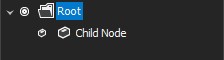

Tree Control
Overview
The Tree Control ITree is a hierarchical UI component used to represent structured data in a parent-child relationship. It allows users to navigate, select, edit, and manipulate nodes efficiently within a single unified interface.
The control supports:
- Hierarchical node structures
- Multi-selection
- Node searching
- Hit testing
- Dynamic loading
- Sorting and visibility management
Architecture
The Tree Control is composed of the following core components:
| Component | Description |
|---|---|
| ITree | Main control interface |
| ITreeNode | Represents an individual node |
| ITreeNodeCollection | Contains child nodes |
| ITreeNodeSelection | Represents selected nodes |
| TreeHitTestData | Result of hit testing |
| ITreeHitTestLocation | Describes UI region |
| ITreeNodeSearchCondition | Defines search logic |
Creating a Tree
ITree tree = treeFactory.Create(eventHandlers);
Notes
- Always create instances using ITreeFactory
- The caller is responsible for disposal
- Event handlers define interaction behavior
Working with Nodes
Creating Nodes
ITreeNode root = tree.RootNodes.Append("Root");
ITreeNode child = root.Nodes.Append("Child Node", dataObject);

Node Properties
| Property | Description |
|---|---|
| Text | Display text |
| Data | Associated data object (read-only) |
| Tag | Custom runtime metadata |
| Visible | Determines visibility |
| ImageKey | Icon key |
| ExpandedImageKey | Icon when expanded |
Node Hierarchy
ITreeNode parent = tree.RootNodes.Append("Parent");
parent.Nodes.Append("Child 1");
parent.Nodes.Append("Child 2");

- Nodes can contain unlimited child nodes
- Structure forms a recursive hierarchy
Selection
Access Selection
foreach (ITreeNode node in tree.NodeSelection)
{
Console.WriteLine(node.Text);
}
Check Selection
if (tree.NodeSelection.Contains(node))
{
Console.WriteLine("Node is selected");
}
Key Notes
- Selection is read-only
- Managed internally by the tree
- Used for:
- Drag & drop
- Clipboard operations
Focus Management
tree.FocusedNode = node;
- Gets or sets the currently focused node
- Must belong to the same tree instance
Hit Testing
Hit testing determines what part of the tree is under a given point.
Example
TreeHitTestData hit = tree.HitTest(mousePoint);
if (hit.Node != null)
{
if (hit.Location.IsText)
Console.WriteLine($"Text clicked: {hit.Node.Text}");
if (hit.Location.IsExpandButton)
Console.WriteLine("Expand button clicked");
}
Hit Test Result
| Property | Description |
|---|---|
Node |
Node at location (may be null) |
Location |
UI region information |
Searching Nodes
Custom Search Condition
public class TextSearchCondition : ITreeNodeSearchCondition
{
private readonly string text;
public TextSearchCondition(string text)
{
this.text = text;
}
public bool IsMatch(ITreeNode node)
{
return node.Text.Contains(text, StringComparison.OrdinalIgnoreCase);
}
}
Usage
var results = tree.Find(new TextSearchCondition("Item"), true);
Batch Updates
Using BeginLoad / EndLoad
tree.BeginLoad();
try
{
// Bulk node creation
}
finally
{
tree.EndLoad();
}
Benefits
- Prevents UI refresh overhead
- Improves performance significantly
Manual Updates
tree.BeginUpdate();
try
{
// Modify nodes
}
finally
{
tree.EndUpdate();
}
Visibility Control
Check Visibility
bool visible = tree.IsNodeVisible(node);
Ensure Visibility
tree.MakeNodeVisible(node);
Clearing Data
tree.ClearNodes();
tree.ClearSelection();
Sorting
tree.CustomSort = new CustomComparer();
- Allows custom node ordering
- Applies across the tree
Dynamic Loading (Lazy Loading)
When your tree contains a large number of nodes (for example, files, database records, or hierarchical data), loading everything at once can slow down the UI.
Instead, you can load nodes only when the user expands them.
How It Works (Concept)
- Initially, a node is shown as expandable (even if its children are not loaded yet)
- When the user expands the node: . You fetch or generate its children . Add them to the node
- This happens only once per node
Step-by-Step Implementation
1. Mark Node as Having Children
node.HasChildren = true;
This tells the UI:
“Show expand arrow, even if children are not loaded yet”
2. Handle Expand Event
You need to load children when the node is expanded:
void OnBeforeExpandNode(ITreeNode node)
{
// Prevent reloading if already loaded
if (node.Nodes.Count > 0)
return;
// Load children dynamically
node.Nodes.Append("Child 1");
node.Nodes.Append("Child 2");
}
Real Example
Imagine a file explorer:
- Root shows: C:\
- You don’t load all folders inside it immediately
- When user expands C:\ → then load folders like:
- Program Files
- Users
- Windows
Why This Matters
Without lazy loading:
- Tree becomes slow
- High memory usage
- UI freezes during load
With lazy loading:
- Faster startup
- Smooth user experience
- Scales to large datasets
Common Mistake
❌ Reloading children every time node expands
✔ Always check:
if (node.Nodes.Count == 0)
When to Use
Use lazy loading when:
- Data comes from database / API
- Tree has thousands of nodes
- Data is expensive to compute
Drag and Drop
Selection plays a key role in drag-and-drop operations.
Typical workflow:
- Get selected nodes
- Start drag operation
- Use hit testing to determine drop target